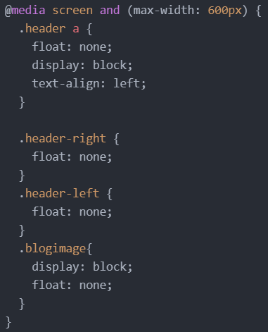
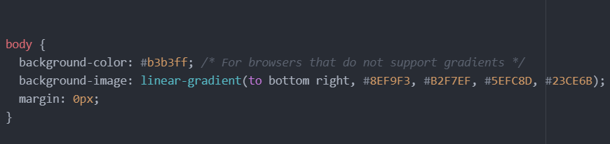
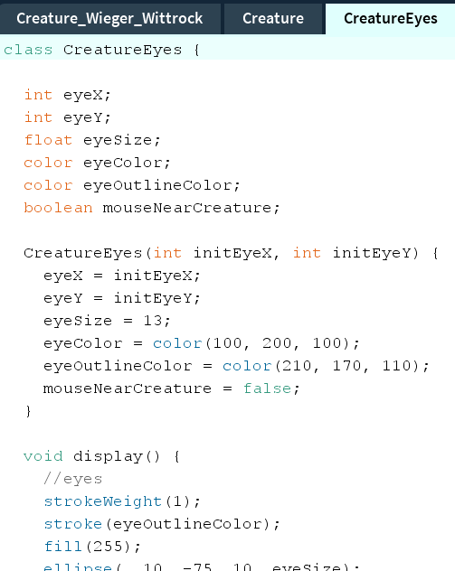
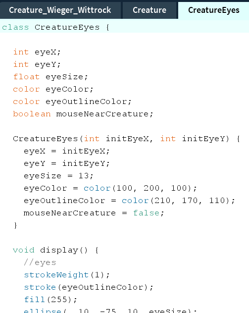

This blog post is about the personal touch of this website. I started from scratch and did not use a template. So everything I made,
was made with a personal touch on this website.

The first code I want to show you that contributed to the personal touch of this website, is showcased in this image.
My header consist of 3 different buttons and a big home button. When you scale the screen-size down, then all the buttons will keep floating
on their side of the screen: "portfolio" stays left, and "home" and "blog" stay to the right. The big home button will stay in the center.
If you scale the screen-size too far down however, then the buttons will overlap each other. The code from the picture prevents this.
If the screen-size is smaller then 600px, then some stuff will happen.
First off, the buttons will no longer float to the right, or the left.
The buttons are now displayed as blocks, so instead of standing next to eachother the buttons now will be under eachother.
Also, the text in the buttons is now alligned to the left instead of the middle, because I thought that looked nicer.
Finally, all the images in the blog posts will stop floating and will also be displayed in blocks, simply because there is not many space
left if all the images will be next to the text.
The second piece of code is about the background color of the website. As you can see behind this blog post, the background color is not a single color.
Instead it is a linear-gradient from four colors. I chose these four colors, (Electric Blue, Celeste, Spring Green and Emerald) because I like
them and because I think they fit with eachother as a background. The gradient goes from the top-left corner to the bottom-right corner.
I also made a background color for browsers that do not support the gradient.
The usefull thing of css is that now the background color will be the same for every page on this website, by only using one piece of code!



 
